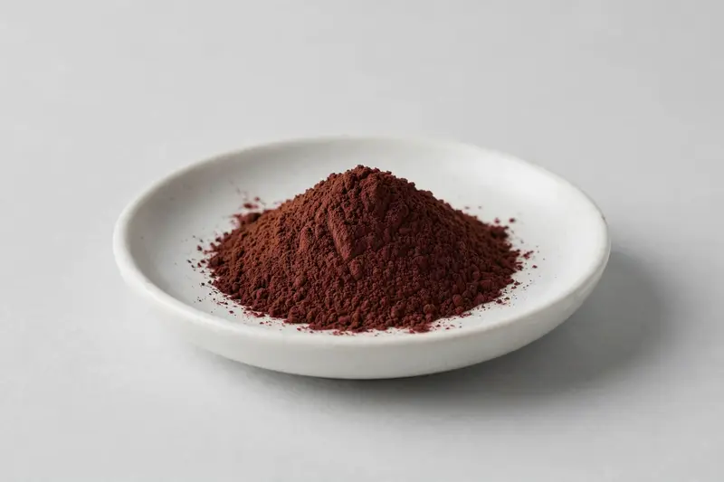

Manjistha — a traditional root botanical for skin-positioned formulations.

Overview
Manjistha extract is prepared from the root of Rubia cordifolia and is a familiar ingredient in skin-focused supplement and cosmetic development. Buyers often request grades standardized to purpurin, manjistin, or total quinone-type colorants, since these compounds are also linked to the extract's natural red hue. From our Xi'an trading base, we coordinate with partner producers and confirm sourcing feasibility after receiving a buyer's target specification.
Specifications below reflect commonly requested options in the market — not a stock list. Share your target spec and we'll confirm exactly what we can supply, honestly.
| Specification | Details |
|---|---|
| Botanical identity | Manjistha root extract powder (Rubia cordifolia) |
| Source material | Root |
| Marker compound | Commonly requested spec grades: purpurin and manjistin standardized grades, sometimes expressed as total anthraquinone-type content; actual specs confirmed on inquiry |
| Appearance | Deep reddish-brown to maroon-brown fine powder |
| Analytical methods | Methods referenced in buyer specifications: HPLC |
| Mesh size | Typically 80–100 mesh (confirm per inquiry) |
| Testing | COA/TDS arranged on request; scope agreed per your spec |
Applications
Documentation
We don't claim in-house labs or certifications we don't hold. COA and TDS documents can be arranged on request, and testing scope is agreed against your specification before supply.
FAQ
Related products
Phosphatidylserine
Key marker: 20-50% PS
View specs →L-Alpha-glycerylphosphorylcholine
Key marker: 50% / 99%
View specs →L-Citrulline
Key marker: 99%+
View specs →Eclipta prostrata
Key marker: Wedelolactone Content
View specs →Boerhavia diffusa
Key marker: Boeravinone Content
View specs →Send your target spec and volumes — we'll respond with a tailored quotation.
Request a Quote